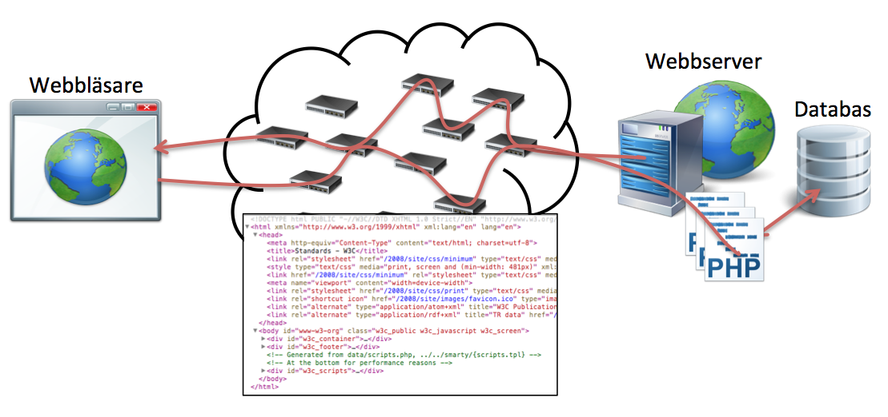
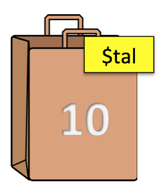
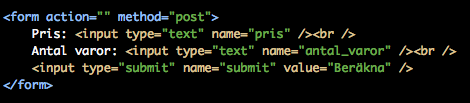
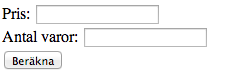
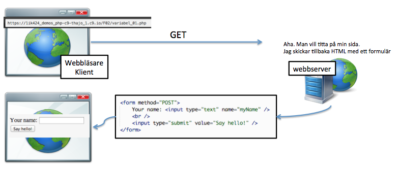
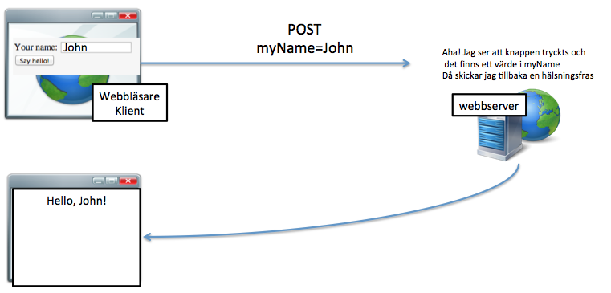
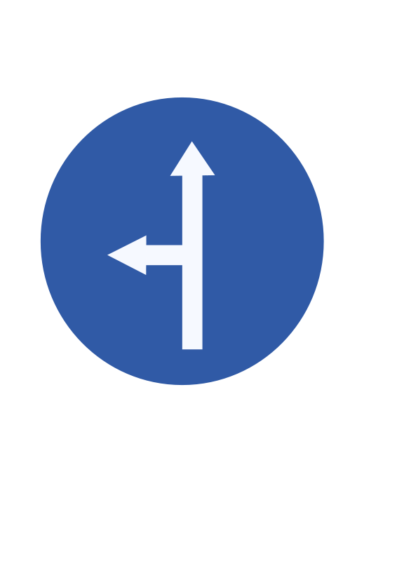
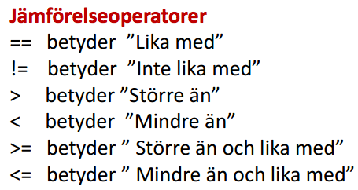

Web Management, 1IK424
Linnéuniversitetet, VT2014
PHP part I
PHP är ett serverscriptspråk

Denna föreläsning
- Förstå och använda variabler i PHP
- Kunna skriva ett formulär i HTML samt ta emot den data användaren "postar" i ditt PHP-skript
- Programmera med if-sats i PHP med hjälp av logiska uttryck
- Använda for-loopar i PHP
Vad är programmering?
- Att programmera är att tillverka ett recept som datorn ska följa
- Ett program innehåller koder som datorn kan förstå
- Koderna innehåller instruktioner som datorn kan utföra och data(information) som
datorn kan använda när den utför sina instruktioner.
- Genom att kunna programmera kan vi få datorn att göra det vi vill
12 grundläggande begrepp
- Variabel (Variable)
- Tilldelning (Assignment)
- Värde (Value)
- Datatyp (Data Type)
- Uttryck (Statement)
- Alternativ/Selektioner - (Conditional statements)
- Operatorer (Operators)
- Logiska uttryck (Logical operators)
- Repetitioner - (Loopar/Loops)
- Array (Array)
- Funktion (Function)
- Parameter (Parameter)
Vad är en variabel?
- En variabel ses som en namngiven behållare för ett sparat värde
- Variablerna ges unika namn så att man kan referera till dem senare i sin kod
- Ett variabelnamn är "casesensitive" d.v.s. "message" är inte samma ska som "Message"
// Variabel i javascript
var tal = 10;
// Variabel i PHP
$tal = 10;
$tal = $tal + 10;
echo($tal); // Vad kommer skrivas ut?

Vad kommer skrivas ut?
// Variabel i PHP
$talX = 10;
$talY = $talX;
$talZ = 100;
$resultat = ($talX * $talY) - $talZ;
// Vilket är värdet i variablen $resultat när den skrivs ut?
echo($resultat);
Olika typer av variabler
En variabel kan vara av en speciell datatyp
vilket innebär att man behandla dem på olika sätt.
- integer - heltal (1, 14, 23)
- double - decimaltal (1.5, 132.24323)
- string - text / tecken ("What ever text" , 'More text')
- boolean - sant eller falskt, true eller false, 1 eller 0 ($isReady = TRUE;)
- array - en lista med variabler ([1, 23, 4, 2, 32, "hej", TRUE])
- ...finns fler
$userMessage = "Ditt meddelande sparades"; // variablen har datatypen string
$totalNumberOfMessages = 7; // variablen har datatypen integer
$isSaved = TRUE; // variablen är en boolean
Textsträngar
Textsträngar (string) kan bestå av noll eller flera tecken
Det finns enkla sätt att slå ihop (konkatenering), räkna antal tecken, m.m.
// textsträngar
$name = "Lisa";
// I php använder man punkttecken för att enkelt slå ihop strängar
$completeMessage = "Hej " .$name;
echo($completeMessage); // Skriver ut: Hej Lisa
// ett alternativt sätt
$name = "Lisa";
$completeMessage = "Hej $name!";
echo($completeMessage); // Skriver ut: Hej Lisa!
DEMO
Problem:
Gör ett PHP-script som med hjälp av variabler beräknar moms på ett pris och
presenterar detta.

HTML-formulär
För att användaren ska kunna skicka data till vår PHP-kod behöver vi skapa HTML-formulär


Hur man bygger html-formulär:
http://www.html-form-guide.com/html-form/html-form-input.html


$_POST
I PHP kan man enkelt komma åt data som skickas via ett formulär
via $_POST-variablen
$price = $_POST["price"];
$moms = $_POST["moms"];
DEMO
- Bygg vidare på momsberäkningsapplikationen
- Använd PHP för att beräkna på de värden användaren matar in genom att använda $_POST
1) Skapa ett HTML-formulär
2) Visa några olika kontroller - Koncentrera sig till ett textfield
3) $_POST, posta till en annan sida
4) Skillnad mellan GET och POST
5) Posta till samma sida - Problem ? Vi måste titta OM värdet är satt = Selection
Men OM...
- ...vi har ett formulär och bara vill göra något när användaren tryckt på knappen
- ...vi vill ha någon form av validering på det användaren skriver i formuläret
- ...vi vill vara säkra på att det användaren är av en speciell datatyp eller inom ett speciellt intervall
Selektioner (if-satser) i PHP
När du behöver göra ett vägtal i din kod...
- OM användaren tryckt på "spara-knappen" ska vi...
- OM användaren inte fyllt formuläret korrekt ska vi...
- OM en speciell sak ska vi...
- OM en speciell sak inträffat ska vi...
- OM det inte finns några bloggposter ska vi...
- OM vi ska visa kommentarer till varje bloggpost...

if-sats
if-sats används för att kontrollera om något är sant eller falskt
$price = 10;
if($price < 10) {
echo("Priset är mindre än tio");
}
if($price > 10) {
echo("Talet är större än tio");
}
if($price == 10) {
echo("Talet är lika med tio");
}
else-sats
Selektionssats. Om en if-sats inte “slår in” kan man fånga
det i en else-sats. “Om något är sant gör man detta, annars
gör man detta…”
$tal = 50 + 50;
if($tal < 100) {
echo("Talet är mindre än 100");
}
else {
echo("Talet är större eller lika med 100");
}
if-elseif-else
Sista varianten. “Om detta är sant - gör detta, annars om
detta är sant – gör detta, annars gör detta!”
$tal = 60 - 40;
if($tal > 100) {
echo("Talet är större än 100");
}
elseif($tal < 100) {
echo("talet är mindre än 100")
}
else {
echo("talet är varken större eller mindre än 100");
}
Mer information:
http://www.php.net/manual/en/control-structures.elseif.php
Att jämföra olika värden

if($tal == 10) {
// om talet är lika med 10 gör vi koden som står här
}
if($tal <= 10) {
// om talet är mindre än/lika med 10 gör vi koden som står här
}
Du gissar
Vad kommer skrivas ut?
$tal1 = 15;
$tal2 = 15
$tal3 = 10;
if($tal1 <= $tal2) {
echo "Första vilkoret stämmer";
if($tal2 == $tal3) {
echo("Andra vilkoret stämmer");
if($tal1 > $tal2) {
echo "Tredje vilkoret stämmer";
}
}
else {
echo "Vi hamnade i else-satsen"
}
}
Logiska operatorer
När vi vill jämföra flera saker på en och samma gång
&& = Logiskt OK
|| = Logiskt ELLER
$tal1 = 10;
$tal2 = 100;
$tal3 = 1000;
// Kombinera flera vilkor
if ($tal1 < $tal2 && $tal1 > $tal3) {
echo "Meddelande 1";
}
if ($tal1 < $tal2 || $tal1 > $tal3) {
echo "Meddelande 2";
}
DEMO
Bygg vidare och validera formuläret.
1) Två input fält - (använd ej && -- Ge ett felmeddelande om inputen är tom annars lägg ihop dem
2) vad händer om användaren skriver en sträng? - Kolla av om det är ett nummer (visa hur jag hittar det via google)
3) utöka med isset och == ""
4) vad händer om användaren skriver en sträng? - Kolla av om det är en sträng is_numeric
5) Men om jag vill kolla flera saker OM detta och OM detta...

Iteration - om och om och om igen
- T.ex. skriva ut alla blogginlägg
- T.ex. skapa en lista med 10 rader
- T.ex. göra någonting till ett visst tillstånd uppnås
- for-loop
- while-loop
- foreach-loop
Vanligast är for-loopen
for-loopen har man till att upprepa kod ett visst antal gånger
Vi vill skriva ut "Hello World!" 10 ggr
// for-loop
// loopen körs lika många gånger
// 1. Vi skapar en variabel $i och sätter den till 0
// 2. Vi skapar ett vilkor (så läng $i är mindre än 3)
// 3. För varje gång loopen går öka $i med 1
for($i = 0; $i < 3; $i++) {
echo("Hello World!");
}
DEMO
Ett enkelt exempel på for-loop som skriver ut
ett meddelande i en lista
Självstudier
- Använda variabler i PHP
- Använda dig av HTML-formulär och ta hand om den data som användaren där skriver
- Programmera med selektionssatser i PHP
- Använda for-loopar i PHP
- Åtminstone första tre delarna i http://www.codecademy.com/tracks/php
- Kapitel 1- 3 + 6 i "learning PHP 5" (gör övningarna)
 Detta verk är licensierat under en
Creative Commons Erkännande-IckeKommersiell-DelaLika 3.0 Unported Licens.
Detta verk är licensierat under en
Creative Commons Erkännande-IckeKommersiell-DelaLika 3.0 Unported Licens.